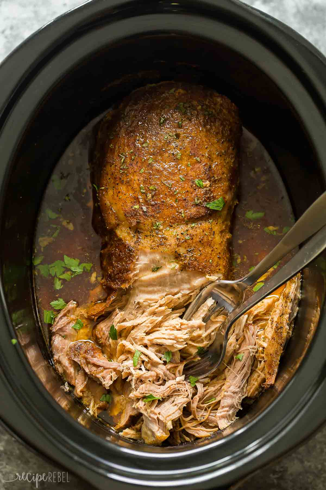

Aiden's Pork 'Stew'

Ingredients
- Two (2) Pork Tenderloins
- One (1) Bag Baby Carrots
- Five (5) Medium Red Potatoes
- One (1) Yellow Onion
- Splash of Red Wine
- Spices (salt, pepper, onion powder, garlic powder, rosemary)
Steps
- Chop onion and potatoes into smallish pieces
- Put onions, potatoes, and baby carrots into a crock pot
- Brown the tenderloins in a pan with a little oil
- Place tenderloins over the potato, carrot, onion mixture
- Splash with red wine
- Season liberally with salt, pepper, garlic powder, onion powder, and rosemary
- Cook on low for 5.5 hours